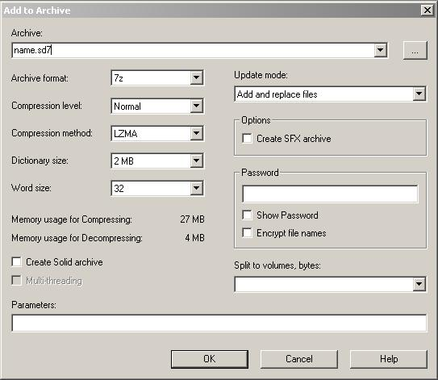

Maps:Compiling
Development < Map Development < Maps:Compiling
Compiling Spring Maps
This is often the bit that scares a lot of people off, but it is really not that difficult. There are two different ways to compile a map, so you can choose which option suits you best. You can:
- Compile through a DOS prompt, or
- Create and batch file.
**NOTE!** IF YOU EVER GET JUST A PINK TEXTURE AFTER COMPILING THE ISSUE IS THAT YOU EITHER RENAMED THE FILES AFTER COMPILING OR CHANGED THE DIRECTORY STRUCTURE! THE SMD, SMT, AND SMF FILES MUST BE ALL CONTAINED WITHIN A DIRECTORY INSIDE YOUR ARCHIVE NAMED "maps"!!!
Before you start
First off, download a map converter.There are two compilers that most people use:
- Mothers MapConv with 'optimization'
This version should work for everyone, it has the no scanlines hack included. Works just like its described below. - Users MapConv without optimization
Use this if you feel adventurous or need very special features.
Place the compiler in to a directory on your computer somewhere. Because of a bug in the program, the path to the map converter can NOT contain ANY Spaces. A Path of C:\Maps\MapConv\ is good, but a path of C:\Maps\Map Conv\ is BAD.
A good practice is to save all your source Pictures into seperate folders when making a map. However, this gets very tedious when compiling. So it is a good idea to make a copy of your source BMP files and place these in the same folder as the map converter. This just makes things alot easier later on. You should have the following files in your MapConv folder:
- Texture.bmp (mapsize*512 pixels)
- Height.bmp (mapsize*8+1 pixels)
- Metal.bmp (mapsize*8+1 pixels)
- Feature.bmp (mapsize*8 pixels)
All .bmp files should be 24bit RGB bitmaps.
You should also put, if you are using them, your type map (Type.bmp) and your tile map (Tile.bmp). Most maps do not use these, so you do not usually need to worry about them.
You need the 7-zip compression program to compress your map into a .sd7 map file.
A .smd file. These can be made with Maelstroms SMD creator. It is recommended to actually try to learn how the different SMD values works though by looking at other maps .smd files. The SMD creator is also not completly bugfree, so you should preferably look it through once with a text editor anyway.
You also need to know:
- The minimum and maximum heights of your map.
- The name of your map.
- How much you want to compress your map.
Command Line Options
As the compiler runs off information entered into it as Command Line Parameters , you need to know a bit about them first. Command Line Parameters are really not difficult to understand. They look a bit like this:
ProgramName -Setting1 Value -Setting2 Value
The first bit is how we launch the program. Windows will launch whatever program is specified by ProgramName. -Setting1 Value is also very simple. Windows basically says to the program "Setting1 is Value". A better example would be -height 10, which basicly means "Height is 10". These can be combined with as many settings as you want, as we can see with the Setting2 Value bit. In this way we can pass as much information to the compiler as we want. To compile a map, we need the following Command Line Parameters:
Map Compression This takes the form of -c Compression, where Compression is a value. Typing -c 0 will give a compression of 0. Range is 0-1, where 0 is no compression, and will make you final map file size very large. **NOTE** NEVER USE THE SMF COMPRESSION, IT IS UTTERLY USELESS! (Further note, its not useles, just ugly. If your making a map thats bigger than 16*16, then I advise you to use it to save on the file size and texture memory. Values of up to 0.6 wont cause too noticable loss in quality, while still reducing file size.)
Max Height This specifies the maximum height of the map. This option looks like -x Height, where Height is the maximum height of the map. Typing -x 300 will give your map a maximum height of 300 map units.
Minimum Height This specifies the minimum height of the map. This option looks like -n Height, where Height is the minimum height of the map. Typing -n -50 will give your map a minimum height of -50 map units.
Texture This specifies the location of your texture picture. This option looks like -t Location, where Location is the location of your texture image. Typing -t texture.bmp will make the compiler look in the same directory it is in for texture.bmp. Typing -t C:\Maps\HillMap\texture.bmp will make the compiler look in the C:\Maps\HillMap\ for texture.bmp. This name cannot contain spaces.
Other Picture files These work in basically the same way as the texture option works, with just a changed Setting name.
- -m metal.bmp: Specifies the location of the metal map.
- -a height.bmp: Specifies the location of the height map.
- -f feature.bmp: Specifies the location of the feature map.
- -y typemap.bmp: Specifies the location of the terrain type map.
Please note that these names cannot contain spaces.
Map Name The Map Converter needs to know where to save your map, and what to call it. We use the -o Mapname.smf setting to do this. Of course, you replace Mapname with the name of your map, but you NEED to have the '.smf' bit on the end of it, otherwise the compiling wont work. An example would be -o HillMap.smf. This name may contain spaces, but only if you put the filename in quotes like so: -o "My Map Name.smf"
Other Tags Some of these tags are helpful, some are annoying and some are just a mystery. This is basically the mics tags settings.
- Low Pass: If you map has very steep slopes or rough areas that look ugly, this will smooth them a bit. Is activated just by typing -l. Very useful feature if your heightmap is a bit noisy but you dont want to lose detail by blurring/smoothing it in an image manipulation program
- Invert Height map: As the logical way to make a height map is the same way up as all the other maps, but the way the map is actually used is the inverted version of this. To make things easier, they included this option to invert the height map. Is activated just by typing '-i'. Most maps will use this. With invert option enabled, black areas on the heightmap will correspond do the lowest points on the map.
Compiling through a batch file
This is perhaps the easiest option. You just have to create a simple text file, rename it, and run.
First, open up Notepad. Notepad can be found in Start > Program Files > Accessories > Notepad. In notepad, type or copy the following:
mapconv -c 0 -x 500 -n 50 -o MapName.smf -t texture.bmp -m metal.bmp -a height.bmp -f feature.bmp -i
Replace the relevant values with the values you need, as the settings here will not work for all the maps. Then, in Notepad click File > Save As. In the file name box, type "Compile.bat", with the quotes. If you do not have the quotes, it will not work. Save the file in the same directory as your compiler.
Go to the MapConv folder on your hard drive, and you should see a new file. This file will be called Compile.bat. Double click this file, and a black Dos window should pop up. After a few minutes the window should close. There will now be 2 extra files in that directory. MapName.smt and MapName.smf.
Compiling through DOS
Use this option if you want to read the information that the MapConv outputs. If you are not familiar with how DOS works, then this way is not for you.
All you need to do is navigate your way through DOS to the location of your map converter program. Then, type in the following:
mapconv -c 0 -x 500 -n 50 -o MapName.smf -t texture.bmp -m metal.bmp -a height.bmp -f feature.bmp -i
Replace the relevant values with the values you need, as the settings here will not work for all the maps.
Once compiled, there will be 2 extra files in that directory. MapName.smt and MapName.smf.
Testing your map
Most often, its very annoying to have to zip and replace your map files for them to work. There is a very simple workaround that allows you, for example, to edit your .smd file and not have to zip it all up again:
Create a Mapname.sdd directory in your spring/maps folder, and copy the all the files you would normally place into the zipped map into it. This will allow Spring to load the map just as if it were 7zipped and renamed to .sd7
Example file placing: Spring/maps/Mapname.sdd/maps/Mapname.smd
After you've got everything fine tuned, you can 7zip the map for distribution.
Compressing your map
Your SMD file needs to have the same name as the .smt and .smf files. If your smt file is calles HillMap.smt, your .smd file needs to be called HillMap.smd.
Place the MapName.smd, MapName.smt and MapName.smf files into an empty folder called maps\. Eg: C:\maps\. Right click this folder, and a right click menu should appear. In that menu, there will be a 7-Zip> submenu. Open this menu, and click Add to Archive.... A 7-zip window will appear. Make sure the settings are identical to the following picture:

{kind=link}
Change the Archive box at the top to the name of your map, with .sd7 on the end. Eg: HillMap.sd7. Click the OK button. After the compression has completed, there will be a file called HillMap.sd7 in the same directory as the folder was. In this example, the HillMap.sd7 would be straight on the C:\ drive. Copy HillMap.sd7 to your TASpring\Maps\ directory.
NOiZE: The compresion can be set at ultra. but make sure you don't make it a solid archive!
If all of this was done correctly, the map should now appear your maps list in the lobby, and you can go play it.